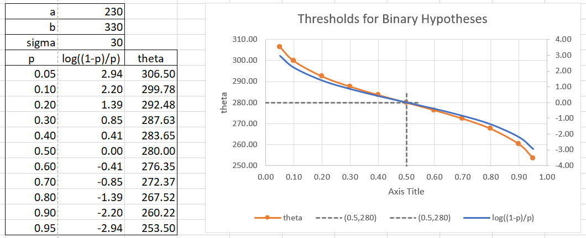
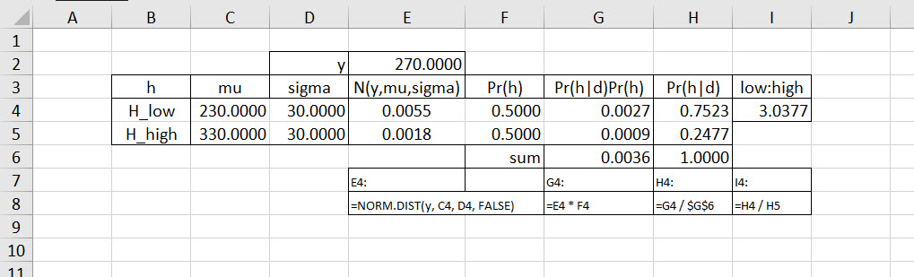
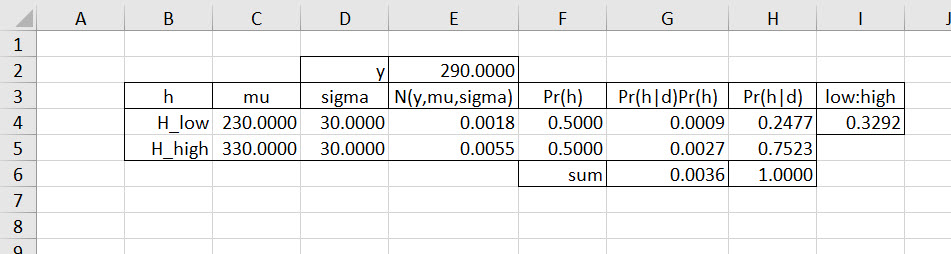
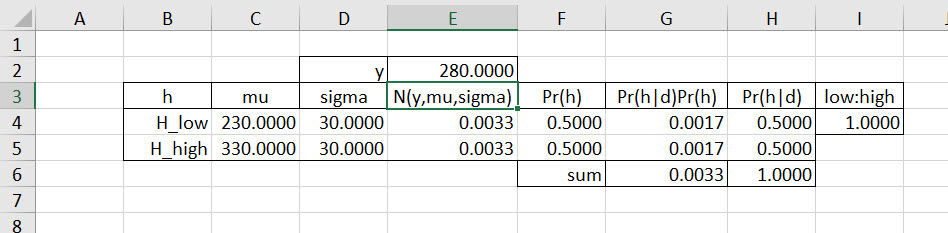
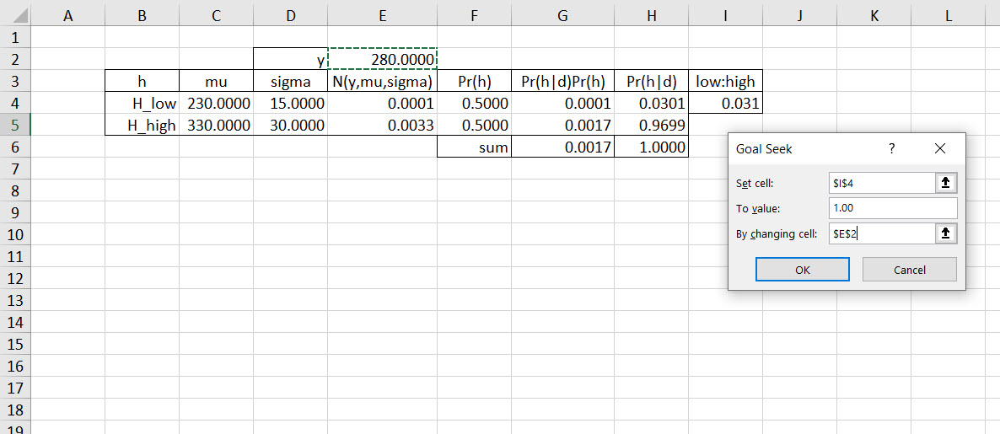
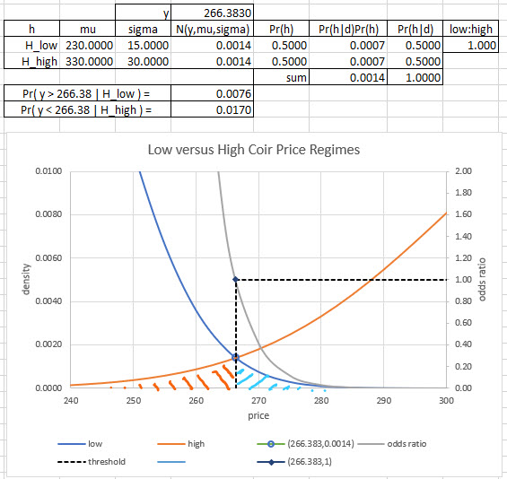
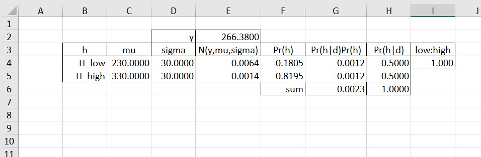
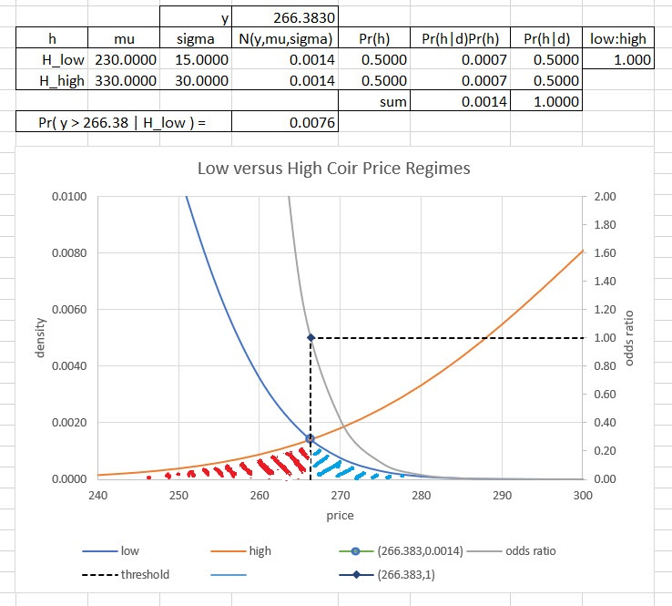

Chapter 10 Hypothetically Speaking
10.1 Imagine this…
Our team is about to contract for coir. We make activated carbon for filtration systems. We have a bet going on: half the team believes that coir prices are low, the other half high. Both sides have stated what they think is a low versus a high price based on procurement experience and trades in the market for coir, FOB Indonesia.
We formulate these two hypotheses.
\[ \begin{align} H_{high}:&\,\, \mu=b=330.\, with \, \operatorname{Pr}(H_{high}) = p \\ H_{low}:&\,\, \mu=a=230, \, with \, \operatorname{Pr}(H_{low}) = 1-p \end{align} \]
Each hypothesized mean coir price can occur with the Jakob Bernoulli jump probabilities \(p\) and \(1-p\). In previous episodes, all we did was flip the up-down machine a number of times to get at the binomial probability. This time we know the magnitudes of the jump. The standard deviation \(\sigma=30\) betrays the riskiness of this market and the size of the jump as well.
What we are really trying to do? Suppose we observe a price of \(y=290\). We ask is this a high regime price or a low one.
Under \(H_{low}\), prices average USD 230/mt so that observed prices \(y=Y\) will be distributed as \(Y \mid H_{low}∼N(230, 30^2)\). If we believe this then we have this \(\operatorname{Pr}(data = y \mid hypothesis = H_{low})\).
\[ \operatorname{Pr}(y \mid H_{low})= \frac{1}{\sigma \sqrt{2\pi}}e^{-\left(\frac{(y-230)^2}{2\sigma^2}\right)} \]
Yes, the Gaussian robot is back. We have our two observational models of coir prices. Which one is more plausible? Which one is more consistent with the observation of coir prices, really of one coir price USD 290/mt. Here is the second one model at stake when prices average a high level of $330/mt.
\[ \operatorname{Pr}(y \mid H_{high})= \frac{1}{\sigma \sqrt{2\pi}}e^{-\left(\frac{(y-330)^2}{2\sigma^2}\right)} \]
For both \(\sigma=30\). Will that \(\sqrt{2\pi}\) hang around? We will see soon enough.
For each hypothesized average coir price and probability of that hypothesis even occurring, it behooves us to pick the hypothesis that is most plausible. We have a both-and statement looming in the mist. We look at how plausible it is that both the event \(y=290\) occurs and the belief that \(H_{low}\) occur together. We know that this means we must multiply the two probabilities.
For the joint distribution of data \(y\) and \(H_{low}\) we have this relation.
\[ \begin{align} \operatorname{Pr}( (y=290) \wedge (H_{low}:\, \mu=230) ) &= \operatorname{Pr}(y \mid H_{low}) \operatorname{Pr}(H_{low}:\, \mu=230) \\ &= \left(\frac{1}{\sigma\sqrt{2\pi}}e^{-\left(\frac{(y-230)^2}{2\sigma^2}\right)}\right) \times (1-p) \end{align} \]
Cutting to the chase we calculate this high regime version of the both-and probability.
\[ \begin{align} \operatorname{Pr}( (y=290) \wedge (H_{high}:\, \mu=330) ) &= \operatorname{Pr}(y \mid H_{high}) \operatorname{Pr}(H_{high}:\, \mu=230) \\ &= \left(\frac{1}{\sigma\sqrt{2\pi}}e^{-\left(\frac{(y-330)^2}{2\sigma^2}\right)}\right) \times p \end{align} \]
As ominous as all of this looks all we want to find out is if \(H_{high}\) is more plausible than \(H_{low}\) then this simple relationhip must be true.
\[ \begin{align} \operatorname{Pr}( (y=290) \wedge (H_{high}:\, \mu=330) ) &\geq \operatorname{Pr}( (y=290) \wedge (H_{low}:\, \mu=230) ) \\ \left(\frac{1}{\sigma\sqrt{2\pi}}e^{-\left(\frac{(y-330)^2}{2\sigma^2}\right)}\right) \times p &\geq \left(\frac{1}{\sigma\sqrt{2\pi}}e^{-\left(\frac{(y-230)^2}{2\sigma^2}\right)}\right) \times (1-p) \end{align} \]
As bestly as the formulas look, we do know how to calculate then! In Excel each term in the large parenthesis is just NORM.DIST(y, \(\mu\), \(\sigma^2\), FALSE ), where FALSE calculates the probability mass. We get this result after a short bit of time inside Excel.
\(H_{high}\):The left-hand side is
NORM.DIST(290, 330, $30^2$, FALSE )*0.5 = 0.0055 * 0.5000 = 0.0027.\(H_{low}\): The right-hand side is
NORM.DIST(290, 230, $30^2$, FALSE )*0.5 = 0.0018 * 0.5000 = 0.0009
The high:low odds ratio is 0.0027:0009 = 3:1 in favor of the high price regime for coir prices observed at a level of $290/mt.
What is the breakeven, that is even odds of 1:1, threshold price? It turns out to be in this simple case of agnostic, indifference to one or the other hypothesis, that it is the simple average of the two hypothesized means, \((330+230)/2=280\). Any observed price above this threshold favors a high price regime, and otherwise classifies the observed price as a low price.
In the next section we take our algebraic life into our hands and deduce, using our armory of albegraic tools and vast experience, to verify our results here. After that we implement the model into an Excel worksheet and continue our quest for more knowledge.
10.1.1 For those who really want to, or even need to
We can bow to the formulae and balance and reduce to a, perhaps, surprisingly simple result, algebraicly. We will also do all of this with a low price mean of \(a\) and a high price mean of \(b\). In this way we will have a general formula for any binary decision with Gaussian noise in it.
We start with the question we posed in the last section. What threshold favors a high price regime? The answer we propose is the hypothesis whose odds ratio is greater than 1, alternatively whose joint probability of observed data and hypothesis is the greater. We start right off with the big beasts of burden Gaussian inequalities.
\[ \begin{align} \left(\frac{1}{\sigma\sqrt{2\pi}}e^{-\left(\frac{(y-b)^2}{2\sigma^2}\right)}\right) \times p &\geq \left(\frac{1}{\sigma\sqrt{2\pi}}e^{-\left(\frac{(y-a)^2}{2\sigma^2}\right)}\right) \times (1-p) \\ exp{\left[-\left(\frac{(y-b)^2}{2\sigma^2}\right)\right]} &\geq exp{\left[-\left(\frac{(y-a)^2}{2\sigma^2}\right)\right]} \times \left(\frac{1-p}{p}\right) \\ exp{\left[-\left(\frac{(y-b)^2}{2\sigma^2}\right) + \left(\frac{(y-a)^2}{2\sigma^2}\right)\right]} &\geq \left(\frac{1-p}{p}\right) \\ \frac{(y-a)^2 - (y-b)^2}{2\sigma^2} &\geq log\left(\frac{1-p}{p}\right) \end{align} \]
As is the story with anything Gaussian we end up with a quadratic term. We used these algebraic moves to get the last inequality. We also save some notional angst with \(log_e() = log()\) throughout, sometimes \(ln()\) is used as well.
Multiply both sides by \(\sigma\sqrt{2\pi}\) and anything multiplied by 1 is itself.
For base \(e\), or any base for that matter, \(e^{-x}/e^{-y}=e^{-x}e^{y}=e^{-x+y}\) and the fact that \(1/e^{z}= e^{-z}\).
Again for base \(log_e (e^x) = x\) and whatever we do to one side of the inequality we must do to the other (if there are no negative multiplications or divisions involved).
Let’s stop there! On the right is the logarithm of the odds in favor of \(H_{low}:\, \mu = a\) versus \(H_{high}:\, \mu = b\) flipping the ratio on the left-hand side. Let’s not be too misled by the use of the \(log()\) function. After all logs are the same function (although to base 10) that we measure decibels and wonder how loud the music can go before we lose our hearing! We have seen odds ratios before. Here again to overdo the point we use the logarithm to the base \(e=2.712\ldots\). The \(log()\) function just scores the ratios.
On the left-hand side we need to reduce the numerator to this polynomial.
\[ \begin{align} \frac{(y-a)^2 - (y-b)^2}{2\sigma^2} &= \frac{(y^2 - 2ay + a^2) - (y^2 - 2by + b^2)}{2\sigma^2} \\ &= \frac{(2b-2a)y + (a^2 - b^2)}{2\sigma^2} \\ &= \frac{2(b-a)y + (a-b)(a+b)}{2\sigma^2} \\ &= \frac{2(b-a)y - (b-a)(a+b)}{2\sigma^2} \\ &= \frac{2(b-a)\left(y - \frac{a+b}{2}\right)}{2\sigma^2} \\ &= \left(\frac{b-a}{\sigma^2}\right)\left(y - \frac{a+b}{2}\right) \end{align} \]
The algebraic insight here was to realize that \((a^2-b^2)=(a-b)(a+b)=-(b-a)(a+b)\) a trick in much use by quadratic afficionados. The \(b-a\) term is just the range between the low and high hypothesized means. The \((a+b)/2\) term is the arithmetic average of the two hypothesized means. Doesn’t this look suspiciously like some sort of uniform distribution magic? No, not magic, but the interplay of Gaussian, and the other distributions, with the uniform distribution building block. It’s really like Legos(tm).
We drop this result into the seeming quagmire of our derivation next where We then multiply both sides by \(\frac{\sigma^2}{b-a}\) and add \(\frac{a+b}{2}\) to get much simpler result, almost a gem.
\[ \begin{align} \left(\frac{b-a}{\sigma^2}\right)\left(y - \frac{a+b}{2}\right) &\geq log\left(\frac{1-p}{p}\right) \\ \left(y - \frac{a+b}{2}\right) &\geq \left(\frac{\sigma^2}{b-a}\right) log\left(\frac{1-p}{p}\right) \\ y &\geq \frac{a+b}{2} + \left(\frac{\sigma^2}{b-a}\right) log\left(\frac{1-p}{p}\right) \end{align} \]
There’s that arithmetic average at the head of the line. It is followed by an important correction for the strength of our convictions about one or the other price regime. If we favor the high price regime then we subtract from the breakeven. This has the effect of curtailing the range of the low price regime while expanding the primacy of the high price regime. We illustrate this here.

The table of varying \(\operatorname{Pr}(H_{high}=p)\) yields the log odds ratio \(log((1-p/p))\) to the measured on the secondary y-axis to the right. As we assign greater plausibility to the high regime hypothesis, we also reduce the odds of the low regime hypotheses. When we reduce the low regime hypothesis below the break even \(p=0.5\) level, we begin to subtract from the breakeven threshold, \(\theta=280\). The opposite happens when we assign greater credibility to the high regime hypothesis.
To belabor the point further, here are some numbers we shouold into the threshold formula! We know that \(b=330\), \(a=230\), \(\sigma=30\) and \(p=0.5\). That the \(\operatorname{Pr}(H_{high})=\operatorname{Pr}(H_{low})\) eliminates that potentially nasty looking, but very helpful we will see, \(log((1-p)/p) = log(0.5/0.5) = log(1) = 0\) term. All we are left with, in the equal \(sigma\) case we have here is this very simple decision rule.
\[ \begin{align} y &\geq \frac{a+b}{2} \\ &\geq \frac{230+330}{2} \\ &\geq 280 \end{align} \]
We did it and it probably did not take too many years off our lives as well. What does this inequality say to us? We choose the low price regime whenever an observed price, or an average of observed prices falls below USD 280/mt net of a correction for the dispersion of prices, \(\sigma\), and taking into account experience with the occurrence of low versus high price regimes, \(p\).
In fact, if we are agnostic, ignorant, or just do not care about whether one or the other hypothesis has ever existed in the field, then we would set \(p=0.5\). The logarithm of the ratio of \(1-p\) to \(p\) is then conveniently zero. We are left with \(y \leq 280\). Any price greater than 280 is consistent with the high price regime centered at USD b/mt.
We have thus derived our first statistical decision rule. We will therefore statistically classify any observed coir price as a high price if we observe that the price is greater than (or equal to) USD280/mt. Otherwise we classify the observed price as a low price. Done!
This is our first foray into a machine learning model, the binary classification model. Yes, to learn is to infer. Here we inferred with an abundance of probability. We now venture into the deeper end of the pool by considering a numerical implementation of this model in Excel. We will ask questions like what would happen if the \(\sigma\)s are different between the two classes of prices? What happens to the threshold if we vary the probabilities that the hypotheses are reasonable in the first place? What would happen if we used the Poisson or binomial or Student’s t distributions instead, and why? More to come with a graph or two and certainly a bunch of tables to ponder.
10.1.2 Finally an excel screenshot
We can build a simple two model (two means, two standard deviation) selection criterion. Yes, you read it right, two standard deviations. In our exhausting reliving of elementary algebra memories we only used one standard deviation. We can rederive the result algebraicly for two or more means and standard deviations should we desire to. It is indeed a good exercise like solving the London Times cross-word puzzle, in ink. Here is our one standard for two models example.
 We first notice that the plausibility split lands on the \(H_low\) hypothesis, even when both hypotheses are equally plausible. In this case the observed price \(y=270\) is below the decision threshold \(280 - (30^2/100)log(0.5/0.5)=280\) so that some common sense reigns. If we were to observe \(y=290\) exactly the opposite occurs and we land squarely in the high price regime.

The odds clearly no longer favor the low price regime.
When we set the observed price to \(y=280\) we see this result.

The odds are even. The decision maker would, statistically only speaking, be indifferent to high or low regimes. We discover an insight here: even odds (1:1) mean both regimes are equally plausible so that the decision threshold is the one value that makes the odds even.
Our next experiment is to set the low price \(\sigma_{low}=0.15\), a phenomenon often observed in commodity markets. Not much activity happens at low price levels due sometimes to a relative lack of arbitrage bid-ask price widths. We use our insight about even odds to find the decision threshold in this practical situation.
We can use Data > what if > Goal Seek to find the price we would have to observe to be the decision threshold.

Mathematically what is happening here is a one variable optimization.
\[ min_{y} |OR - 1.00| \\ such\,\,that \\ p = 0.5 \]
We choose \(y\) to minimize the absolute value of difference between the odds ratio \(OR\) and 1.00. There are several implicit constraints embedded in the odds ratio, not the least of which is the calculation of the numerator and denominator of the odds ratio. We focus on the important \(p=0.5\), the so-called uninformative indifference to the two hypotheses. By pressing OK we find this not so surprising result.

The decision threshold is lower than the equal \(\sigma\) case by over $13. It makes sense since the high price regime is spread out more than the low price regime.
One more thought experiment presents itself. This time we use the low \(\sigma\) threshold of \(y=266.38\) with equal \(\sigma=30\) for each regime. This allows us to find the probability \(p\) of ever observing the low price regime. We minimizes the absolute difference between the odds ratio and 1.00 under the constraint that the decision threshold is 266.38. So many words that collapse into this mathematical expression.
\[ min_{p} |OR - 1.00| \\ such\,\,that \\ y = 266.38 \]

In this model we discover complementary roles for \(\sigma\) and \(p\). A low value of \(\sigma_{low}=15\) carries the same level of information about the low price regime hypothesis that a low value of \(p = \operatorname{Pr}(H_{low})=0.18\) carries. They are equivalent measures.
In this model the claim that the low price regime is less risky, less variable, less noisy than the high price regime is that same thing as saying that we find the low price regime less credible than the high price regime in general. We are indeed biased to the high price regime in our decison making. We would, on average and in expectation, even prefer the high price regime to the low price regime if \(\operatorname{Pr}(H)\) has any meaning at all. Decision preferences are right at the edge of what we can expect this model to do for us.
10.2 Can we be wrong?
One more concern. We might want to know what is the probability that the low regime price hypothesis is true even though we chose the high regime, for example if we observe a price, say of 290. this is the statement \(y \mid H_{low} > 266.38\) for the mixed standard deviation / high price preference data. This table and graph zooms into the critical intersection of the high and low price regime distributions.

The tail we are concerned with is the blue-hatched nearly triangular shaped area to the right of the dotted line and below the blue low regime normal density curve. We should also note that the low and high regime densities cross each other at the threshold and where the odds ratio is exactly 1. This tail is also the probability of the high regime price given a low regime decision. It is the probability we might be wrong about choosing low versus high. Other have called this a sort of p-value, but its not quite that.
We can calculate the tail’s cumulative probability as the area under the low price regime probability density curve in the tail beyond the threshold 266.38. This expression will compute the amount for us: 1 - NORM.DIST( 266.38, 230, 30, TRUE ) = 0.0074, where TRUE means we are to compute the cumulative probability up to 266.38.
There is only a less than 1% probability that the low regime is consistent with the observation of prices above the threshold. We will probably use this threshold in our decision making. We will also use the idea that if we observe a price below the threshold that price is indeed low, with about 99% probability.
The opposite red-hatched triangular tail is the area to the left of the dotted threshold line at 266.38 and, this time, underneath the high price distribution. We can calculate, and interpret this area too as the cumulative probability of seeing a price below 266.38 given a high price regime point of view: `NORM.DIST( 266.38, 330, 30, TRUE ) = 0.014, This may or may not be too high for the risk intolerant among the analysts and decision makers. Or, they may take this information into consideration in making a contract for high priced coir.
10.3 Yet another way
Conventional hypothesis testing reaches back about 100 years. The goal then was to supply researchers with relatively easy to compute and apply tests to what has been called significance of a finding. There is a whole theory of knowledge, cognitional operations, logic, epistemology, and methodology behind this approach, and just a little bit of controversy over the past decade as well.
Up to this point we have used what we might call a superset of techniques a subset of which is the conventional hypothesis testing, and confidence (really – plausibility) interval estimations embedded in the methodology. Both techniques are are the same when the probability of any one hypothesis is the same as any other hypothesis. The results may be interpreted differently, but in the end our supposition is that decision makers hanker for some measure of the plausiblity of a claim, a conjecture, a hypothesis. We have done this the entire course of our investigation into probabilistic reasoning.
Here are the mechanics of a binary hypothesis testing method using conventional techniques without regard to explicit measure of the probability of a hypothesis.
10.3.1 Population standard deviation known
As with confidence and credibility intervals, we sample repeatedly in our experiments from a population. We calculate sampled means and we know these are Gaussian, normally, distribution is a mean of the sampled means equal to the population mean and a standard deviation equal to the population standard deviation divided by the square root of the sample size.
Hypotheses face off with data. There are two hypotheses in the 1928 approach by Neyman and Pearson. First there is noise only. It might be Gaussian, or Poisson generated, but it is the status quo. This is called the null hypothesis \(H_0\), which we believe is true. Against this hypothesis is the speculative, alternative hypothesis \(H_A\) or \(H_1\), which we are trying to refute, since it is speculative after all. The benefit of the doubt is given to the null hypothesis in this approach.
Two errors are possible. Here we build more into the tails of the overlapping distributions we experienced before.
Type I error, also known as a false positive is when we reject a null hypothesis when it is actually true. This is the error of accepting an alternative hypothesis (the real hypothesis of interest) when the results can be attributed to chance. We think we are observing a difference in the two hypothesis when in truth there is none, probably so.
Type II error, also known as a false negative occurs when the error of not rejecting a null hypothesis when the alternative hypothesis is the true state of nature. We fail to accept an alternative hypothesis when we don’t have adequate power. We are fail to observe a difference when in truth there is one.
| Null is true | Null is not true | |
|---|---|---|
| Reject Null | OK | False Negative |
| Keep Null | False Positive | OK |
Type I Error: the False Negative means the researcher did not retrieve relevant information.
Type II Error: the False Positive means that the research retrieved irrelevant information.
How can the company control for error? Let’s be more specific. How can the company ensure that the processed coconut price is as accurate as possible?
10.3.2 Control is probability
Here is what the company does:
- Management makes an assumption and forms a hypothesis about the average price of processed coconuts found in searches of contracts and other market documents. This is a precise statement about a specific metric. Here the metric is the average price of processed coconut per metric ton, \(\mu\), Suppose this target level is USD 1000/mt.
The null hypothesis (\(H_0\)) is that the population metric equals a target value \(\mu_0\) or \(H_0: \mu = \mu_0\). Suppose that \(H_0: \mu = 1000\). This is business as usual. Those who favor this hypothesis would hope that the only difference is prices is random.
The alternative hypothesis (\(H_1\)) is that the population metric does not equal (or is just greater or less than) the target value. Thus we would have \(H_1: \mu \neq 1000\). These speculators think that prices will rise or possibly fall. Their detractors scowl at the thought.
- Corporate policy sets a degree of confidence in accepting as true the assumption or hypothesis about the metric. The company determines that 95% of the time \(\mu = 1000\). This means there is an \(\alpha =\) 5% significance that the company would be willing to be wrong about rejecting that \(H_0: \mu = 1000\) is true.
Under the null hypothesis it is probable that above or below a mean value of 1000 there is an error of \(\alpha = 0.05\) in total, or \(\alpha / 2 = 0.025\) above and \(\alpha / 2 = 0.025\) below the mean. This practically means that management is willing to have only a 1 in 20 chance of being wrong about their view of the business, that is about the null hypothesis.
Because management expresses the alternative hypothesis, \(H_1: \mu \neq 1000\), as “not equal” then this translates into a two-tailed test of the null hypothesis.
What if management expressed the alternative hypothesis as \(H_1 > 1000\)?
10.3.3 On to the unknown
Let’s suppose we do not know the population standard deviation. Now the sampled standard deviation is also a random variable, like the sampled mean. In practice this is nearly always the case. What do we do now?
Use the Student’s t distribution to correct for small sample errors as well as the idea that sampled standard deviations are random processes themselves, just like the sampled means used to compute the sampled standard deviations. Quite a web we are weaving!
Here’s a plot (again) of the Student’s t overlaid with the normal distribution.

What do we notice?
Normal is more pinched in than t (kurtosis? right!)
t has thicker tails than normal
Let’s check that: in Excel use
=T.INV(2.5%,3)which returns-3.18, and where the degrees of freedom \(df\) of our 4 sample prices from our work in confidence intervals is \(df = n - k = 4 - 1 = 3\). Here \(n\) is the sample size of 4 randomly sampled prices and \(k\) is the number of estimators we are building, just one in this case \(\mu\).Thus for the t distribution it takes 3.18 standard deviations below the mean to hit the 2.5% level of cumulative probability. It would only take 1.96 standard deviations on the normal distribution.
There are \(k=3\) degrees of freedom because it only takes 3 out of the 4 sampled prices to get the fourth sampled price (we do this by using 1 estimator, the mean we calculated).
That it took fewer standard deviations for the normal than for the t distribution to hit the 2.5% level of cumulative probability means that the t distribution is thicker tailed than the normal.

10.3.4 On with our story…
When management does not know the population standard deviation, the analyst must use the Student’s t distribution to correct for small sample sizes. As this is almost always the case for hypothesis testing, management has decreed that the Student-t distribution will be used for hypothesis testing.
- CONTINUED — management decides on regions of the distribution for acceptance that the null hypothesis is probably true and for rejection of the null hypothesis as well. This picture tells those and about 900+ more words.

Suppose management can take a random sample of \(n = 100\) prices. An analyst then computes the sample average \(\overline{X} = 980\) of prices (USD/mt, that is) with a standard deviation of \(s = 80\), meant to represent the very unknown population \(\sigma\).
They then compute the \(t\) score, just like the z-score for the normal distribution:
\[ t = \frac{\overline{X} - \mu_0}{s / \sqrt{n}} = \frac{980 - 1000}{80 / \sqrt{100}} = -2.5 \]
and compare this value with the the acceptance region of the null hypotheses \(H_0\). So, what is this value?
- For a sample size of \(n = 100\) and \(k = 1\) estimator (\(\overline{X}\)), the degrees of freedom \(df = n - k = 100 - 1\). Under a Student’s t distribution with 99 \(df\), and using Excel’s
=T.INV(0.025, 99), the region is bounded by t scores between \(-1.98\) and \(+1.98\).
The computed t score is -2.5 and falls in the rejection region of the null hypothesis.
The analyst can report that it is 95% plausible that the data rejects the null hypothesis that the market is holding steady at USD 1000/mt.
Another way of reporting this might be that there is a 5% probability that the data is compatible with the null hypothesis.
10.4 Exercises
- An electric car manufacturer buys aluminum alloy sheets of 0.05 of an inch in thickness. Thick sheets are too heavy and thin sheets imbalance the axle loads on icy and rainy road surfaces. The purchasing officer along with a manufacturing engineer samples 100 sheets of a shipment before accepting it and calculates an average of 0.048 inches in thickness with a standard deviation of 0.01 of an inch.
At a 5% level of being wrong, or in error, should the purchasing officer accept the shipment?
What is the probability that the purchasing officer is wrong about rejecting the null hypothesis?
- A real estate developer is comparing construction wages in two markets. In New York, using a random sample of 150 workers, the average daily wage is $1,800 with a standard deviation of $500 per day. In Los Angeles, for the same skills and experience, a random sample of 125 workers yields a daily wage average of $1,700 per day with a standard deviation of $450 per day.
Is there a significant difference in wage levels between the two cities at the 5% level? This is the same thing as asking if there are two distinct sub-markets at work.
What is the probability of being wrong about rejecting the null hypothesis if we were to use this approach?